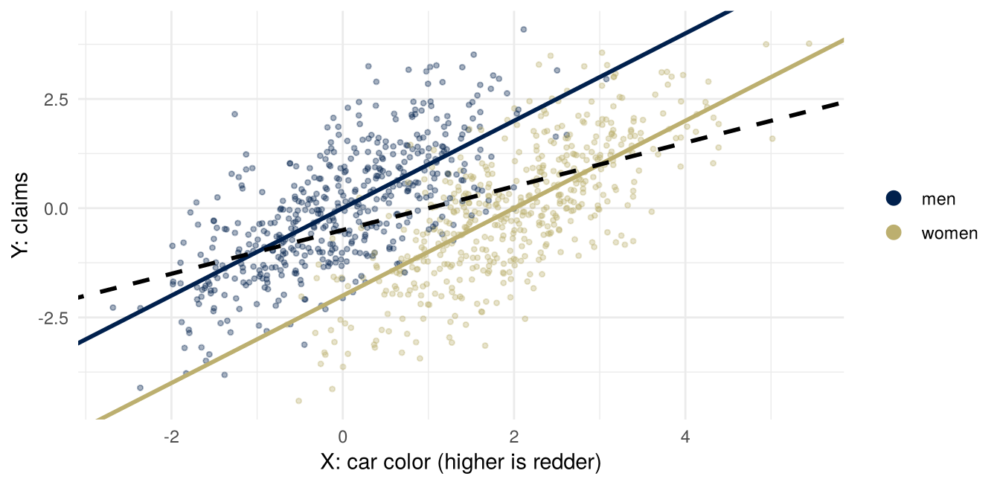
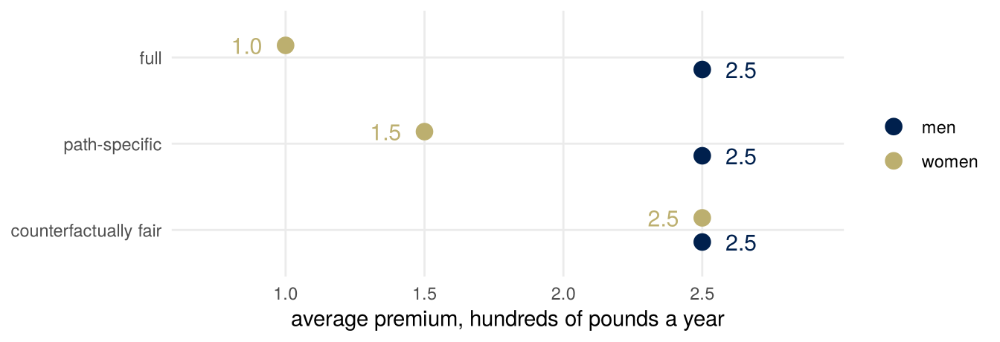

Fairness II: causal
Important note: this week is about whether an insurer may price on sex, directly or through other variables, and about which causal paths from a protected attribute are fair. The algebra below is not contested. Which causal graph describes a real case, which paths are fair, and what the law should require are contested, and my view is one view. A well-argued position I think is wrong can still get full marks.
Summary
Since December 2012 an insurer in the European Union may not use sex as a factor in its premiums. It can still use the car, the mileage and everything else it records, and some of those depend on sex. The observational criteria compare groups in a table, and the same table can come from different mechanisms. This week writes the mechanism down as a causal model, which makes a new kind of question possible: what would this person’s price have been had the attribute been different?
Counterfactual fairness asks that the answer be the same price. In the simplest example, the red car, the price that never looks at sex fails this test and a price that uses sex passes it. Direct and indirect effects split the effect of an attribute along the paths it takes, and the total effect is their sum when the two are defined with matching reference levels. A path-specific criterion removes the effect of the attribute only along the paths judged unfair. On one small model, the counterfactually fair price and the path-specific price differ by the contribution of the path someone judged fair.
Which paths are fair is not something the data can say. It is a judgment about control and responsibility, and moral luck, the control principle and luck egalitarianism bear on it. The week ends where those ideas meet the law: the counterfactually fair price needs the attribute that the law forbids an insurer to use.
What you brought
The task was to bring one decision in which an attribute is used, or deliberately not used, with one route by which it could affect the outcome, and whether that route is fair. A route is a path in a causal graph: an arrow from the attribute to something, and on to the outcome. Drawing it makes the judgment visible, because the judgment is always about a particular arrow. “Sex affects the premium” says little; “sex affects how many miles a person drives, and mileage affects claims” names a path someone can defend or object to.
The red car
Pricing without sex
On 1 March 2011 the Court of Justice of the European Union ruled on a question sent to it by the Belgian Constitutional Court, where Test-Achats, a Belgian consumers’ association, had challenged the Belgian law transposing an EU directive that prohibits discrimination based on sex in access to goods and services. The directive prohibited the use of sex as a factor in insurance premiums and benefits, but let member states allow exceptions, provided the actuarial and statistical data behind them were reliable, regularly updated and available to the public. The Court’s press release is headed “Taking the gender of the insured individual into account as a risk factor in insurance contracts constitutes discrimination”, and the Court ruled that the exception was invalid from 21 December 2012. Since then, insurers in the EU may not use sex as a factor in premiums and benefits.
The law forbids an input. It does not forbid predicting claims from everything else, and some of everything else depends on sex. The observational criteria cannot say whether that is fair, because the same table of counts can come from different mechanisms. The mechanism has to be written down.
The red car
ms4ds, section 3.4.1, and Kusner, Loftus, Russell and Silva (2017), the first of whose scenarios this is, describe an insurer that predicts the accident rate or the claims \(Y\) of a policy from the color of the car \(X\). An unobserved factor \(U\), aggressive driving, makes a person both more likely to choose a red car and more likely to have an accident. Members of one group, \(A = 1\), are more likely to drive red cars, and no more likely to be aggressive or to have accidents. Kusner et al. take \(A\) to be race; ms4ds takes it to be gender, and so do these notes, with \(A = 1\) for a woman.
The graph is \(A \to X \leftarrow U \to Y\). There is no directed path from \(A\) to \(Y\): sex has no effect on claims. The insurer, forbidden to use sex, predicts from the car alone. ms4ds calls this functional independence, \(\hat Y = \hat f(X)\) with \(A\) not an input; Kusner et al. call it fairness through unawareness.
The unaware price
Take a linear version with numbers. Half the drivers are women, so \(A \sim \text{Bernoulli}(1/2)\) and \(\operatorname{Var}(A) = 1/4\); \(U \sim N(0, 1)\), independent of \(A\); car color on a continuous scale, higher for redder, is \(X = 2A + U\); and claims are \(Y = U + \varepsilon\), with \(\varepsilon \sim N(0, 1)\) independent of \((A, U)\).
The test-score model from the discussion of leaving a column out had the same shape with \(Y\) in the place of \(U\): \(X = Y + 2A + \varepsilon\). There, the model that could not use \(A\) read group 1’s two coached points as ability and predicted group 1 higher. The same happens here. The least-squares slope of \(Y\) on \(X\) alone is
\[ \frac{\operatorname{Cov}(X, Y)}{\operatorname{Var}(X)} = \frac{\operatorname{Var}(U)}{2^2 \operatorname{Var}(A) + \operatorname{Var}(U)} = \frac{1}{1 + 1} = \frac12 , \]
and since \(E[X] = 1\) and \(E[Y] = 0\), the fitted line is \(\hat Y = \tfrac12 X - \tfrac12\). Women’s average car color is \(2\) and men’s is \(0\), so women’s average predicted claims are \(\tfrac12\) and men’s are \(-\tfrac12\). Average claims are \(0\) in both groups. The price that never looks at sex charges women more, for claims they do not make.
A simulation of 1,000 drivers, and least squares with and without \(A\):
n <- 1000
A <- rbinom(n, 1, 1/2) # 1 for a woman
U <- rnorm(n) # aggression, never observed
X <- 2 * A + U # car color
Y <- U + rnorm(n) # claims
coef(lm(Y ~ X)) # the price from X alone(Intercept) X
-0.5454934 0.5115697 coef(lm(Y ~ X + A)) # the price from X and A(Intercept) X A
0.01150287 1.04309699 -2.12880088 
The figure shows the simulated drivers and the population lines. The dashed line is the fit on \(X\) alone. The two solid lines are the best predictions from \(X\) and \(A\), one for each group: at any given color, a woman has lower expected claims than a man.
A counterfactual driver
The reading’s Definition 5 (page 123) gives three steps for a counterfactual in a structural causal model. Abduction: adjust the unobserved variables to be consistent with what was observed. Here \(U = X - 2A = 0.6\). Action: set the attribute, \(A := 0\). Prediction: recompute everything downstream of \(A\) in the modified model, with the abducted \(U\). Her car would have scored \(X = 2 \cdot 0 + 0.6 = 0.6\): two units of her color came from \(A\) rather than from \(U\).
| she, \(A = 1\) | had \(A\) been \(0\) | |
|---|---|---|
| abduction: \(U = X - 2A\) | \(0.6\) | \(0.6\) |
| prediction: \(X = 2A + U\) | \(2.6\) | \(0.6\) |
| price from \(X\) alone, \(\tfrac12 X - \tfrac12\) | \(0.8\) | \(-0.2\) |
| price from \(X\) and \(A\), \(X - 2A\) | \(0.6\) | \(0.6\) |
The unaware price for this driver would have been one unit lower had she been a man. The price that uses \(A\), which is the best prediction from \(X\) and \(A\) in this model, would have been the same.
Counterfactual fairness
Write \(\hat Y(a)\) for the prediction for the same person, with \(U\) abducted from what was observed about them, had \(A\) been set to \(a\). Kusner et al. write \(\hat Y_{A \leftarrow a}(U)\); the reading writes \(\hat Y_{A := a}(E)\), with \(E\) the observed event.
Counterfactual fairness (Kusner et al., Definition 5, page 3). A predictor \(\hat Y\) is counterfactually fair if, for every \(x\) and \(a\), and every value \(a'\) of \(A\),
\[ P\big(\hat Y(a) = y \mid X = x, A = a\big) = P\big(\hat Y(a') = y \mid X = x, A = a\big) \quad \text{for all } y . \]
The distribution is over the values of \(U\) consistent with what was observed; in the red car, \(U\) is determined by \(X\) and \(A\), so it is a single value. Kusner et al. call this “an individual-level definition” (page 3): it compares a person with themselves, not one group with another. The reading calls the same condition counterfactual demographic parity (page 129).
Lemma 1 (Kusner et al., page 5). If \(\hat Y\) is a function of the non-descendants of \(A\) in the causal graph, it is counterfactually fair. A non-descendant of \(A\) takes the same value whatever \(A\) is set to, so any function of non-descendants does too. Kusner et al. add that a predictor can use descendants of \(A\) and still be counterfactually fair, but only where the dependence on \(A\) cancels, which does not happen in general.
The red car, linear. Let \(X = \beta_A A + U\) and \(Y = U + \varepsilon\) with \(\beta_A \neq 0\), \(U\) and \(\varepsilon\) independent of \(A\) and of each other. The least-squares predictor from \(X\) alone is \(\hat Y = \lambda X + \lambda_0\) with \(\lambda = \operatorname{Var}(U) / (\beta_A^2 \operatorname{Var}(A) + \operatorname{Var}(U)) > 0\). For the same \(U\), \(X(a) - X(a') = \beta_A (a - a')\), so \(\hat Y(a) - \hat Y(a') = \lambda \beta_A (a - a') \neq 0\): the unaware predictor is not counterfactually fair. The least-squares predictor from \(X\) and \(A\) is \(E[Y \mid X, A] = X - \beta_A A\), because \(U\) is determined by \((X, A)\); and \(X - \beta_A A = U\), a non-descendant of \(A\), so by Lemma 1 it is counterfactually fair. With \(\beta_A = 2\) these are the two prices in the table. Kusner et al. prove the same statement as Lemma 3 of their supplement (page 14), and say it in a sentence on page 4: “Regressing Y on X alone obeys the FTU criterion but is not counterfactually fair, so omitting A (FTU) may introduce unfairness into an otherwise fair world.” The counterfactually fair price uses the attribute; the price that ignores it does not satisfy the definition.
This depends on the model. The fair predictor is built from \(U\), and \(U\) is never observed: it is abducted from \(X\) and \(A\) through the structural equation for \(X\). A different model for \(X\) gives a different \(U\), and a different fair price. Kusner et al. describe three levels of assumption (page 7). Using only the observed non-descendants of \(A\) needs least; using the error terms of an additive model, as here, extracts the most information and assumes the most.
Conditioning or intervening
In this world \(P(Y \mid do(A := 1)) = P(Y \mid do(A := 0))\): there is no directed path from \(A\) to \(Y\). Yet in the fitted \(\hat Y = X - 2A\) the coefficient on \(A\) is \(-2\). The coefficient compares women and men with the same car color. Car color is a collider on the path \(A \to X \leftarrow U\), and among drivers with the same \(X\), a woman’s color owes two units to \(A\), so her \(U\) is two units lower. The coefficient is a statement about conditioning on \(X\); the absence of an effect is a statement about intervening on \(A\).
Direct and indirect effects
A second world
The red car has no path from \(A\) to \(Y\) at all. In most cases that matter, the attribute does affect the outcome, along some paths that people find acceptable and some that they do not. Keep the insurer and change the world. Annual mileage \(M\), in thousands of miles, depends on sex, and claims \(Y\), in hundreds of pounds a year, depend on mileage and on sex directly:
\[ M = \mu_0 + \alpha A + U_M, \qquad Y = \gamma A + \beta M + U_Y , \]
with \(U_M\) and \(U_Y\) of mean zero, independent of each other and of \(A\), and \(A = 1\) for a woman. The numbers are invented for the arithmetic: \(\mu_0 = 10\), \(\alpha = -4\), \(\beta = 0.25\), \(\gamma = -0.5\). Men drive \(10{,}000\) miles a year on average and women \(6{,}000\); each thousand miles adds £25 a year in expected claims; and at the same mileage, women’s expected claims are £50 a year lower.
Counterfactuals with a mediator
A natural first answer is to compare a woman and a man at the same mileage. Making that precise, and the alternative to it, needs two kinds of counterfactual, both built from \(do(\cdot)\):
- \(Y(a, m)\), the claims under \(do(A := a, M := m)\);
- \(M(a)\), the mileage under \(do(A := a)\).
Combining them, \(Y(a, M(a'))\) is the claims with \(A\) set to \(a\) and mileage set to the value it would have taken under \(A = a'\). When \(a \neq a'\) this is a cross-world quantity: \(Y(1, M(0))\) is a woman driving the miles she would have driven as a man. Nobody’s data contain it. The reading writes \(Y_{X := 1,\, Z := Z_{X := 0}}\) for the same thing, with \(X\) the treatment and \(Z\) the mediator (pages 127 and 128); these notes keep \(Z\) for a confounder and \(X\) for covariates.
The controlled direct effect at mileage \(m\) sets the mediator to the same value for everyone: \(\text{CDE}(m) = E[Y(1, m) - Y(0, m)]\). It needs only \(do(\cdot)\).
The decomposition
The total effect is \(\text{TE} = E[Y(1, M(1)) - Y(0, M(0))]\), the same as \(E[Y \mid do(A := 1)] - E[Y \mid do(A := 0)]\). Add and subtract \(E[Y(1, M(0))]\):
\[ \begin{aligned} \text{TE} &= E[Y(1, M(1)) - Y(0, M(0))] \\ &= \underbrace{E[Y(1, M(0)) - Y(0, M(0))]}_{\text{NDE}} \\ &\quad + \underbrace{E[Y(1, M(1)) - Y(1, M(0))]}_{\text{NIE}} . \end{aligned} \]
The natural direct effect changes \(A\) with mileage held at the value it would have taken under \(A = 0\). The natural indirect effect holds \(A\) at \(1\) and changes mileage from \(M(0)\) to \(M(1)\). No model was used, so \(\text{TE} = \text{NDE} + \text{NIE}\) in any model where the expectations exist, provided the NIE holds \(A\) at the level the NDE moves it to.
The reading defines the natural indirect effect with \(A\) held at \(0\), \(E[Y(0, M(1)) - Y(0, M(0))]\) (page 128). With that definition the sum of the two natural effects is the total effect only in models where the indirect effect does not depend on the level at which \(A\) is held, such as the linear model below. With an interaction between \(A\) and \(M\) the two can differ.
The natural effects need more than \(do(\cdot)\): they combine two settings of \(A\) for the same person, which no experiment can do. Estimating them from data needs an assumption about the two worlds together. In the model above it is built in, by taking \(U_M\) and \(U_Y\) independent; with no confounding of \(A\) and \(M\) or \(M\) and \(Y\), the reading gives the indirect effect as a formula in conditional expectations (page 128).
In the linear model
Put the structural equations into the definitions:
\[ M(a) = \mu_0 + \alpha a + U_M, \qquad Y(a, m) = \gamma a + \beta m + U_Y . \]
Then \(Y(1, m) - Y(0, m) = \gamma\) for every \(m\), so \(\text{CDE}(m) = \gamma\). The NDE holds mileage at \(M(0)\) in both terms, so it is also \(\gamma\). In the NIE, \(Y(1, M(1)) - Y(1, M(0)) = \beta\,(M(1) - M(0)) = \alpha\beta\): the same \(U_M\) appears in \(M(1)\) and \(M(0)\) and cancels. So
\[ \text{CDE}(m) = \text{NDE} = \gamma, \qquad \text{NIE} = \alpha\beta, \qquad \text{TE} = \gamma + \alpha\beta . \]
In a linear model with no interaction, the indirect effect is the product of the coefficients along the path. In the mileage world, \(\text{NDE} = -0.5\), \(\text{NIE} = -4 \times 0.25 = -1\) and \(\text{TE} = -1.5\): women’s expected claims are £150 a year lower than men’s, £100 of it through mileage and £50 directly.
Holding a mediator fixed
\(Y(1, M(0))\) is nobody’s observed outcome; the model supplies it, and every statement about the natural direct effect is a statement about the model.
A regression of \(Y\) on \(A\) and \(M\) compares women and men with the same mileage. In the model above, its coefficient on \(A\) is \(\gamma\), the controlled direct effect, because nothing else affects both mileage and claims. Suppose something does: driving for work, \(U\), adds miles and, mile for mile, adds claims. Then \(M\) is a collider on the path \(A \to M \leftarrow U \to Y\). Women drive fewer miles on average, so a woman with the same mileage as a man is more likely to drive for work, and at equal mileage her expected claims are higher, relative to his, than the direct effect alone would make them: the coefficient on \(A\) lies above \(\gamma\). Comparing people with the same value of a mediator holds it fixed in the data, which is not the same as holding it fixed by intervention.
Two fair predictors
Before December 2012 the insurer’s best prediction was the full one, \(\hat Y_{\text{full}} = \gamma A + \beta M\), which is \(E[Y \mid A, M]\) in this world.
The first is the counterfactually fair premium and the second the path-specific one. On this model both can be computed by hand.
The comparison

| premium | formula | men | women | gap |
|---|---|---|---|---|
| full | \(\gamma A + \beta M\) | \(2.5\) | \(1.0\) | \(-1.5\), the TE |
| path-specific | \(\beta M\) | \(2.5\) | \(1.5\) | \(-1\), the NIE |
| counterfactually fair | \(\beta(M - \alpha A)\) | \(2.5\) | \(2.5\) | \(0\) |
The three differ, for every driver, by
\[ \hat Y_{\text{full}} - \hat Y_{\text{PS}} = \gamma A, \qquad \hat Y_{\text{PS}} - \hat Y_{\text{CF}} = \alpha\beta A . \]
The first difference is the contribution of the direct path, and the second is the contribution of the path through mileage. The two fair premiums differ by the contribution of the path someone judged fair. Neither criterion says which path that is.
The baseline
The counterfactually fair premium above prices everyone as the full model would price them had they been men. Pricing everyone as the full model would price them had they been women, \(\gamma + \beta(\mu_0 + \alpha + U_M)\), is also a function of \(U_M\) and also counterfactually fair, at a lower level for everyone. So is either one plus a constant. The definition fixes the gap between groups at zero and leaves the level open. An insurer whose premiums must cover its average claims has to choose a level, and at that level women pay on average more than they claim, and men less. Which group is the baseline, and what level is charged, are further choices the definition does not make.
Whose judgment
The criteria need a list of fair and unfair paths, and the sources are explicit that the list comes from outside the data.
Kusner et al.’s supplementary material (page 15) adapts the Berkeley admissions example, with \(A\) an indicator of a female applicant and \(X\) the course applied to: “Our judgment is that the higher rejection among female than male applicants is acceptable, if the mechanism A → X is interpreted as a choice which is under the control of the applicant.”
The reading, on the same example, says that treating department choice as the applicant’s own inherent preference “is a substantive judgment that may not be a fact” (page 119). It describes worlds consistent with the same data in which discrimination runs through department choice: a program advertised in a way that discouraged women from applying, or a department known for hostility to women. Accepting the path as fair asserts that all of these are implausible.
Nabi and Shpitser: “The specific paths which correspond to discrimination are a domain specific issue.” Their example is a physical fitness test, which may be appropriate for a job in construction and not for one in accounting, so that the same path from gender through the test to hiring may or may not be discriminatory (arXiv version, page 4).
ms4ds draws a related distinction between a shallow counterfactual and a deep one (section 3.4.1.1). A shallow counterfactual changes the name on an application and keeps everything else in the person’s life the same; a deep one asks how the application would differ had the person had that name all their life. The counterfactually fair premium is a deep counterfactual along every path; the path-specific premium is deep along some paths and shallow along the others.
Dropping the attribute and refitting
An insurer that may not use \(A\) can refit claims on mileage alone. The least-squares slope is \(\operatorname{Cov}(Y, M) / \operatorname{Var}(M)\), and \(\operatorname{Cov}(Y, M) = \gamma \operatorname{Cov}(A, M) + \beta \operatorname{Var}(M)\), so
\[ \text{slope} = \beta + \gamma\,\frac{\operatorname{Cov}(A, M)}{\operatorname{Var}(M)} , \]
with \(\operatorname{Cov}(A, M) = \alpha \operatorname{Var}(A)\) and \(\operatorname{Var}(M) = \alpha^2 \operatorname{Var}(A) + \operatorname{Var}(U_M)\).
The refitted premium’s gap between women and men is the slope times \(E[M \mid A = 1] - E[M \mid A = 0] = \alpha\):
\[ \alpha\beta + \gamma\,\frac{\alpha^2 \operatorname{Var}(A)}{\operatorname{Var}(M)} = \text{NIE} + R^2\,\text{NDE} , \]
where \(R^2 = \alpha^2 \operatorname{Var}(A)/\operatorname{Var}(M)\) is the share of the variance of mileage explained by sex. With \(\operatorname{Var}(A) = 1/4\) and \(\operatorname{Var}(U_M) = 4\), \(\operatorname{Var}(M) = 8\), \(\operatorname{Cov}(A, M) = -1\), the slope is \(0.25 + (-0.5)(-1)/8 = 0.3125\) and the gap is \(-1.25\): the path through mileage, \(-1\), and half of the direct effect, \(-0.25\), which returns because mileage stands in for sex. The refitted premium has no arrow from \(A\), and charges more per mile than the world does.
Nabi and Shpitser’s method fits the model closest to the data, by likelihood, among those in which the path-specific effect judged unfair is held within bounds. When the outcome model is linear and the unfair effect is the natural direct effect, they note that holding it at zero “coincides to simply dropping A from the outcome regression” (arXiv version, page 6). In the mileage world that fitted model charges \(0.3125\) per thousand miles, and has no direct effect by construction. Measured against the world the data came from, its gap includes half of the direct effect. The path-specific premium \(\beta M\) charges the world’s price per mile, \(0.25\), and needs \(\beta\), which can be estimated only from a model that includes \(A\). Which of the two is the fair price of a mile depends on whether the fitted model or the world is what the criterion is about.
With an interaction
The decomposition of the total effect is an identity, and with an interaction the natural effects in it depend on their reference levels. Let
\[ M = \mu_0 + \alpha A + U_M, \qquad Y = \gamma A + \beta M + \delta A M + U_Y , \]
and write \(\text{NDE}_a\) for the natural direct effect with mileage held at \(M(a)\), and \(\text{NIE}_a\) for the natural indirect effect with \(A\) held at \(a\). Since \(E[M(0)] = \mu_0\) and \(E[M(1)] = \mu_0 + \alpha\):
\[ \begin{aligned} \text{TE} &= \gamma + \alpha\beta + \delta(\mu_0 + \alpha) \\ \text{NDE}_0 &= E[Y(1, M(0)) - Y(0, M(0))] = \gamma + \delta\mu_0 \\ \text{NIE}_1 &= E[Y(1, M(1)) - Y(1, M(0))] = \alpha(\beta + \delta) \\ \text{NDE}_1 &= E[Y(1, M(1)) - Y(0, M(1))] = \gamma + \delta(\mu_0 + \alpha) \\ \text{NIE}_0 &= E[Y(0, M(1)) - Y(0, M(0))] = \alpha\beta . \end{aligned} \]
Both \(\text{NDE}_0 + \text{NIE}_1\) and \(\text{NDE}_1 + \text{NIE}_0\) equal the total effect: the decomposition holds with the reference levels paired this way, and not in general. The pair the reading defines, \(\text{NDE}_0\) and \(\text{NIE}_0\), sums to \(\text{TE} - \alpha\delta\). The product of coefficients \(\alpha\beta\) is \(\text{NIE}_0\), which is not the indirect effect that pairs with \(\text{NDE}_0\). With \(\delta = 0\) both pairings give \(\gamma\) and \(\alpha\beta\).
Luck and responsibility
Moral luck
ms4ds, section 3.4.2: “Moral luck refers to how our evaluation of whether someone has done good or not can depend on factors which are outside of that person’s control. The control principle says that we should only judge people to the extent that the factors we judge them on are under their control.” The same section gives the control principle as one justification for treating attributes such as race or gender as sensitive in the first place: they are commonly understood to be outside a person’s control.
The book’s middle view of equality of opportunity discounts differences in qualifications that come from factors outside a person’s control, and the book names insurance as a case: “The middle view has particular purchase in the case of insurance, where we really might want insurers to ignore the additional costs that they are likely to face in setting the price of a policy for someone with an expensive pre-existing condition outside the person’s control” (chapter 4, page 85).
Luck egalitarianism
Luck egalitarianism applies a similar idea to who gets what. Kasper Lippert-Rasmussen’s encyclopedia entry opens with the observation that some people end up worse off than others partly because of bad luck, and its section 7 sets out the distinction between brute luck, risks a person did not choose to take, and option luck, how a gamble the person chose turns out: “Luck-egalitarians, for example, often separate option luck and brute luck and deny that instances of differential option luck are unjust.” The entry also records that views on option luck differ: whether justice requires its effects to stand, permits correcting them, or requires correcting some of them.
Moral luck and luck egalitarianism are distinct ideas. Moral luck is about whether luck should bear on how we judge what people did; luck egalitarianism is about how goods and burdens should be distributed. This course takes them together, because both ask what a person is responsible for, and both answer that what a person does not control should not count against them. A premium is a burden distributed among policyholders.
The reading marks the limit of the formal tools here: “many of the concepts in this chapter, such as whether a decision subject has control over an attribute used for decision making, cannot be expressed in the statistical language of conditional probabilities and expectations” (chapter 4, page 92). A causal graph does not settle it either. It can show that a path exists; whether the person controls what happens along it is the judgment that decides whether the path is fair.
A mediator shaped by the attribute
Mileage is a rating factor with an obvious connection to risk: more miles, more exposure. In the mileage world it also differs by sex, and part of what makes women’s claims lower runs through it. Whether the path \(A \to M \to Y\) is fair depends on why mileage differs. If the difference reflects choices people control, the control principle counts the path as fair. If it reflects who does which job, or which share of caring, it is less clear that the choice was the person’s. The Berkeley example has the same shape, with department choice in the place of mileage, and the reading’s alternative worlds are the argument that a mediator’s appearing to be a choice does not make it one.
A framework and a criterion
ms4ds, after showing what the unaware model does in the red car world: “But there may be a deontological argument in favor of functional independence, including empirical evidence that people generally believe a process with functional independence is more fair” (section 3.4.1). A deontologist may hold that a decision should not take a protected attribute as an input, whatever the consequences. In the red car world that rule produces the price that is not counterfactually fair, and the counterfactually fair price breaks it. Since December 2012, EU law forbids the second. Whether a framework implies a criterion, and whether the two can disagree like this, is a question for the class.
Intersectionality
With two attributes, \(A_1\) and \(A_2\), a model with an interaction,
\[ Y = \gamma_1 A_1 + \gamma_2 A_2 + \delta A_1 A_2 + \dots , \]
gives the effect of \(A_1\) as \(\gamma_1\) when \(A_2 = 0\) and \(\gamma_1 + \delta\) when \(A_2 = 1\). A model without the interaction, \(\delta = 0\), assumes that the effect of one attribute is the same at every level of the other: that being a woman has the same effect whatever one’s race, for example. Yang, Loftus and Stoyanovich build causal models for intersectional fairness in which, in their words, “we generally assume that f_j contains non-additive interactions between sensitive attributes” (arXiv version, page 3), and keep main effects and second-order interactions in their examples. In such a model, each effect of one attribute is stated at a level of the other.
Lenses
Who is in the data? Each driver is in the data once, with one value of the attribute. The same driver with the other value, and \(Y(1, M(0))\), are in nobody’s data: the model fills them in by abduction. A counterfactual criterion is a statement about people the insurer has never observed, and it is only as good as the model that supplies them.
You have to choose, so choose, and defend it. Which paths are fair; which group is the baseline for the counterfactually fair premium, and at what level; whether to price without the attribute, as the law requires, or with it, as counterfactual fairness requires in the red car world. The criteria compute the consequences of each choice and do not make it.
What can be changed, and how? What things are considered “controlled for” or “held fixed,” and is that realistic? Abduction holds \(U\) fixed for the counterfactual driver, which assumes the model’s \(U\) is a property of the person that would not change with the attribute. The natural direct effect holds mileage at \(M(0)\), a value no one is observed at. Equal mileage in a regression is mileage held fixed in the data, not by intervention, and the two differ when something else drives both mileage and claims.
And why? An insurer prices on the variables it is allowed to use, and the path-specific premium in the mileage world needs no sex at all. A price that never mentions the attribute can still carry an indirect effect that someone judged fair. Who judged it, and on what grounds?
Readings
Required
- Barocas, Hardt and Narayanan, Fairness and Machine Learning: Limitations and Opportunities (MIT Press, 2023), chapter 5, Causality: “Graphical discrimination analysis” through the end of “Counterfactual discrimination analysis”, pages 117 to 131 (printed page numbers; a PDF viewer shows them as 127 to 141). Direct effects, indirect paths, counterfactuals and Definition 5, quantitative path analysis, counterfactual discrimination criteria and counterfactuals in the law. The chapter writes \(X\) for the treatment and \(Z\) for the mediator.
- Re-read Loftus, Modern Statistics 4 Data Science, section 3.4, Causality and ethics: the red car, counterfactual fairness, shallow and deep counterfactuals, moral luck and path-specific counterfactual fairness.
Optional
- The same book, chapter 5, “Validity of causal modeling” (pages 132 to 137): whether categories such as race and gender can be variables in a causal model at all.
- The same book, chapter 4, “Tensions between the different views” through “The cost of fairness” (pages 85 to 92), which includes the insurance sentence quoted above.
- Lippert-Rasmussen, Justice and Bad Luck, The Stanford Encyclopedia of Philosophy, first published 20 June 2005, substantive revision 2 February 2023: the introduction and section 7, option luck and brute luck.
- Kusner, Loftus, Russell and Silva, Counterfactual Fairness, Advances in Neural Information Processing Systems 30 (NIPS 2017), https://proceedings.neurips.cc/paper_files/paper/2017/file/a486cd07e4ac3d270571622f4f316ec5-Paper.pdf: sections 1 to 4. Page numbers in these notes are those of the arXiv version, 1703.06856v3, which also has the supplement.
- Chiappa, Path-Specific Counterfactual Fairness, Proceedings of the AAAI Conference on Artificial Intelligence 33(01), 2019, 7801–7808: the introduction.
- Nabi and Shpitser, Fair Inference on Outcomes, Proceedings of the AAAI Conference on Artificial Intelligence 32(1), 2018, https://doi.org/10.1609/aaai.v32i1.11553. Page numbers in these notes are those of the arXiv version, 1705.10378v4.
- Yang, Loftus and Stoyanovich, Causal Intersectionality and Fair Ranking, 2nd Symposium on Foundations of Responsible Computing (FORC 2021), LIPIcs 192, 2021, 7:1–7:20, https://doi.org/10.4230/LIPIcs.FORC.2021.7. Page numbers in these notes are those of the arXiv version, 2006.08688v1.
Cited in the text and not assigned
Court of Justice of the European Union, Press Release No 12/11, “Taking the gender of the insured individual into account as a risk factor in insurance contracts constitutes discrimination”, Luxembourg, 1 March 2011, on the judgment in Case C-236/09, Association belge des Consommateurs Test-Achats ASBL and Others v Conseil des ministres, https://curia.europa.eu/site/upload/docs/application/pdf/2011-03/cp110012en.pdf. I have read the press release, not the judgment.